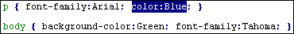
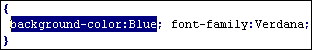

Der Style-Sheet - Editor erleichtert Ihnen den Umgang mit » Cascading Style-Sheets.
Die Angaben können wahlweise mit dem internen Editor oder mit "TopStyle" von » bradsoft.com bearbeiten werden. Die Bedienung der beiden Editoren unterscheidet sich kaum voneinander. "TopStyle" ist komfortabler, dafür allerdings nur auf englisch verfügbar. Der Editor existiert als Freeware- und Shareware - Version. Um "TopStyle" in Scribe! zu benutzen, installieren Sie bitte das Programm und aktivieren in den Optionen den Punkt .
Zu erreichen ist der Editor entweder
- über den Menüpunkt ,
- über den Button , der sich in jedem Tag-Dialog befindet,
- oder ganz einfach dadurch, indem Sie in eine beliebige Style-Sheet - Definition (<style type="text/css">) in einem Dokument klicken und Strg+F3 drücken.
Fall 1 (über ):
In diesem "Normal" - Modus können für beliebig viele Tags Style-Sheet - Angaben definiert werden.
- Wählen Sie dazu zunächst einen Tag aus der oberen, rechten Auswahlliste (z.B. "p") und klicken Sie rechts daneben auf den Button.
- Platzieren Sie den Cursor zwischen die beiden spitzen Klammern.
- Um dem Paragraph-Tag jetzt eine Schriftart zuzuweisen , wählen Sie als Kategorie "Schriftformatierung".
- Selektieren Sie als Style-Sheet - Angabe den Punkt "font-family" und als Attribut z.B. den Eintrag "Arial".
- Drücken Sie nun den Button .
- Um eine Schriftfarbe zu bestimmen, nehmen Sie als Style-Sheet - Angabe "color" und als Attribut "Red" für rot.
- Drücken Sie .
- Rot gefällt Ihnen nicht? Wie wär's mit blau? Klicken Sie dazu in die Definition "color:Red". Die Definition wird markiert.
- Selektieren Sie als Attribut "Blue".

Die Speicherung der Angaben erfolgt über .
Diese Datei kann dann im Editor mit genutzt werden.
Fall 2 (über ):
Sobald Sie auf den Button geklickt haben, erscheint der Style-Sheet - Editor. Die Auswahlliste sowie andere datei - spezifische Funktionen sind deaktiviert, da die Definitionen ja nur für einen bestimmten Tag gelten.
- Um dem Tag eine Hintergrundfarbe zuzuweisen , wählen Sie als Kategorie "Hintergrund".
- Selektieren Sie als Style-Sheet - Angabe den Punkt "background-color" und als Attribut den Eintrag "Navy" für dunkelblau.
- Drücken Sie nun den Button .
- Sollte Ihnen dieses Blau zu dunkel sein, klicken Sie in die Style-Sheet - Definition "background-color:Navy". Wählen Sie den Eintrag "Blue" für hellblau.
- Um diese Definitionen nun dem Tag zuzuweisen, benutzen Sie den Menüpunkt .

Fall 3 (über Strg+F3 oder Kontextmenü):
Nachbearbeitet werden können alle Style-Sheet - Definitionen, die sich entweder im Bereich des <style> - Tags in einem Dokument befinden.
Für eine Nachbearbeitung klicken Sie in die <style type="text/css"> - Angabe und wählen Sie die Tasten Strg+F3 oder den Eintrag im Kontextmenü.